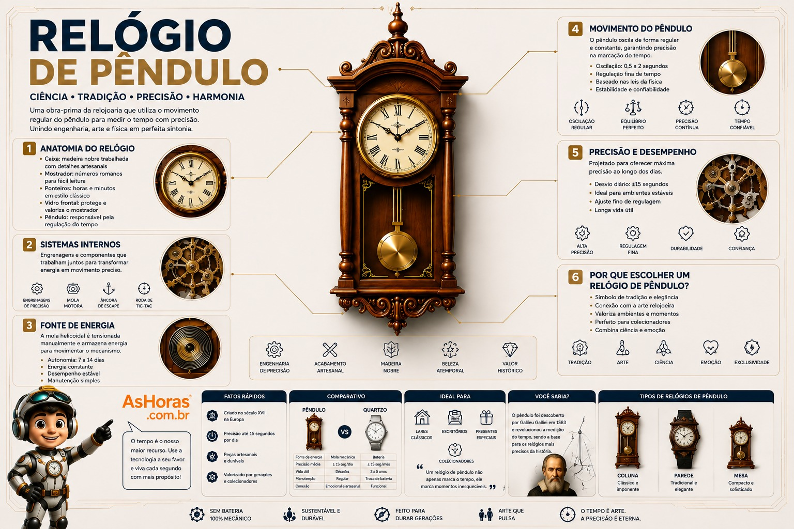

Relógio de Pêndulo: o mecanismo mais preciso por 300 anos
Antes dos cristais de quartzo e dos átomos de césio, um simples peso balançando no ar ensinou a humanidade a medir o tempo com precisão. Do escritório de Huygens às salas de estar do mundo todo, o relógio de pêndulo reinou como o instrumento mais exato por quase três séculos.
O que é um relógio de pêndulo?
Um relógio de pêndulo é um relógio mecânico que usa o balanço regular de um peso suspenso — o pêndulo — para regular a velocidade com que suas engrenagens giram. Cada oscilação do pêndulo libera um dente do mecanismo de escapamento, transformando um movimento contínuo em "tiques" perfeitamente espaçados. Essa ideia simples, baseada no isocronismo descoberto por Galileu, tornou os relógios de pêndulo até então incomparavelmente mais precisos que qualquer relógio mecânico anterior.
Tipos de relógio de pêndulo
O mesmo princípio do pêndulo deu origem a formatos muito diferentes, cada um pensado para um ambiente e uma função específica.
Como funciona o mecanismo
Cuidados e manutenção
Como escolher um relógio de pêndulo
Prós e contras
Vantagens
- Não depende de baterias nem de energia elétrica para funcionar
- Peça decorativa e muitas vezes de valor histórico ou de coleção
- Mecanismo durável, capaz de funcionar por gerações com manutenção
Desvantagens
- Exige nivelamento perfeito e superfície estável para funcionar bem
- Precisa de corda manual regular e manutenção especializada
- Bem menos preciso que relógios de quartzo ou atômicos modernos
Em 1665, doente e de repouso, Christiaan Huygens percebeu algo curioso: dois relógios de pêndulo pendurados na mesma parede do seu quarto acabavam sincronizando seus balanços com o tempo, mesmo tendo sido ligados em momentos diferentes. Ele havia observado, sem querer, um dos primeiros registros do fenômeno físico hoje chamado de sincronização por acoplamento fraco.
Anatomia de um relógio de pêndulo

Evolução do relógio de pêndulo
Huygens
Constrói o primeiro relógio de pêndulo funcional, baseado nos estudos de isocronismo de Galileu.
Escapamento de âncora
Robert Hooke desenvolve o escapamento de âncora, reduzindo bastante o balanço do pêndulo.
Tall case clocks
William Clement aperfeiçoa a âncora e populariza os relógios de caixa alta, futuros "relógios de vovô".
Pêndulo compensado
George Graham cria o pêndulo de mercúrio, que corrige variações de precisão causadas pela temperatura.
Peça de coleção
Superado em precisão pelo quartzo, o relógio de pêndulo sobrevive como objeto decorativo e de herança familiar.
Precisão por tipo de escapamento
Perguntas frequentes
Por que o relógio de pêndulo precisa ficar nivelado?
Porque o balanço do pêndulo depende da gravidade agindo de forma uniforme; qualquer inclinação altera o tempo de cada oscilação e faz o relógio atrasar ou adiantar.
Todo relógio de pêndulo precisa de corda manual?
A grande maioria dos modelos tradicionais sim, com intervalos que variam de 1 a 8 dias, embora existam réplicas modernas com motor elétrico que apenas imitam o movimento do pêndulo.
Por que ele ainda é considerado preciso mesmo sendo antigo?
Porque o isocronismo do pêndulo é um princípio físico sólido; com boa manutenção e nivelamento, um relógio de pêndulo de qualidade pode manter a hora com poucos segundos de erro por dia.
Vale a pena comprar um relógio de pêndulo hoje?
Para quem busca precisão no dia a dia, não é a opção mais prática; mas como peça decorativa, de coleção ou herança de família, ele carrega um valor que nenhum relógio digital reproduz.
Referências e leituras complementares
Este conteúdo foi baseado em fontes públicas sobre a história e o funcionamento dos relógios de pêndulo. Para se aprofundar, vale a leitura: